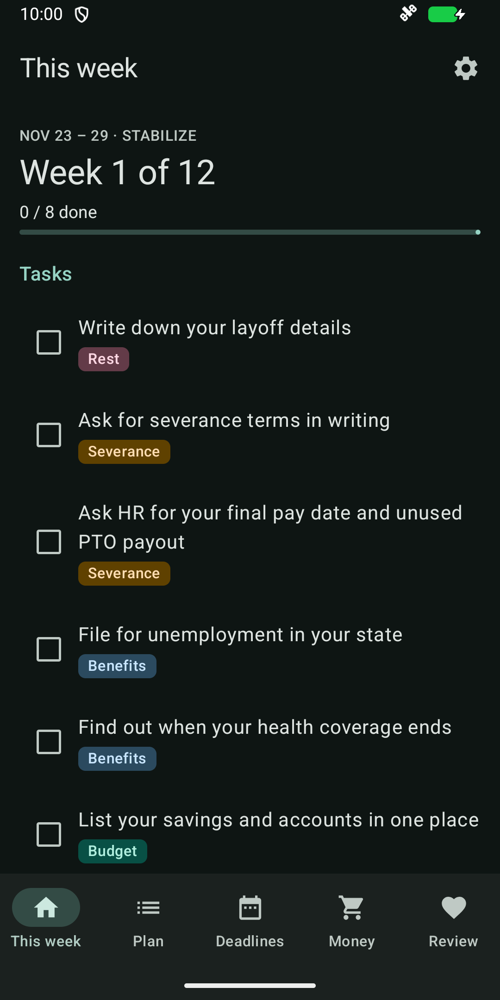
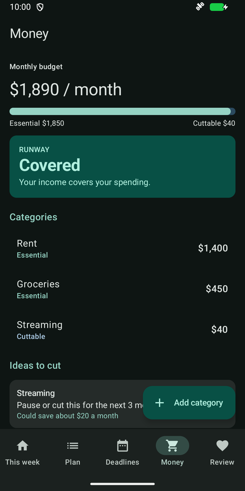

Jobverlust-Plan: 12 Wochen
Entlassen? 12-Wochen-Checkliste mit Fristen, Budget und Reichweiten-Rechner.






Über die App
Job verloren? Gehen Sie es Woche für Woche an. Job Loss Plan gibt Ihnen einen klaren 12-Wochen-Plan für die Zeit nach einer Entlassung in den USA. Jede Woche hat eine kurze Checkliste zu Abfindung, Leistungen, Budget, Bewerbungen und Erholung. Ein kurzer wöchentlicher Check-in zeigt, wie es Ihnen geht. Es ist kein Konto nötig. Alles, was Sie eingeben, bleibt auf Ihrem Handy. DAS BIETET DIE APP - Ein Plan für jede Woche. "Diese Woche" zeigt, was jetzt wichtig ist. Die Übersicht zeigt alle 12 Wochen und Ihren Fortschritt. - Aufgaben nach Ihren Wünschen. Aufgaben bearbeiten, hinzufügen, löschen und sortieren oder die Standardaufgaben einer Woche wiederherstellen. - Wichtige Fristen, berechnet aus Ihrem Entlassungsdatum: Antrag auf Arbeitslosengeld, letzte Gehaltszahlung, Prüfung der 401(k)-Übertragung, Ende des Krankenversicherungsschutzes und die COBRA-Frist. Jedes Datum lässt sich an Ihre Unterlagen anpassen. - Erinnerungen vor jeder Frist und eine wöchentliche Erinnerung an Ihren Rückblick. Benachrichtigungen zeigen nie Beträge. - Ein einfaches Monatsbudget. Markieren Sie jede Ausgabe als notwendig oder kürzbar und sehen Sie Ideen zum Sparen. - Reichweiten-Rechner. Sehen Sie, wie viele Wochen Ihre Ersparnisse, Ihre Abfindung und das Arbeitslosengeld reichen, und wie viel länger, wenn Sie kürzen. - Wochenrückblick. Bewerten Sie Erholung und Stimmung von 1 bis 5, schreiben Sie eine Notiz und beobachten Sie den Verlauf. - Bewerbungszähler mit optionalem Wochenziel. Ein einfacher Zähler, kein Bewerbungs-Tracker. - Nach Woche 12 können Sie 4 Wochen anhängen oder einen neuen Plan starten. Alte Pläne bleiben schreibgeschützt erhalten. - Widget für den Startbildschirm mit aktueller Woche, offenen Aufgaben, nächster Frist und Reichweite. - Sicherung und Wiederherstellung. Exportieren Sie Ihre Daten in eine Datei Ihrer Wahl und importieren Sie sie später wieder. DATENSCHUTZ - Die App nutzt kein Internet. Sie enthält keine Analyse- und Tracking-Dienste. - Optionale App-Sperre mit Fingerabdruck oder Bildschirmsperre. Solange sie aktiv ist, sind Screenshots der Geldseiten blockiert und das Widget blendet Ihre Reichweite aus. - Ihre Daten sind nicht in Cloud-Backups enthalten. Sicherungsdateien sind Klartext, bewahren Sie sie daher an einem privaten Ort auf. FÜR HANDY UND TABLET Helles und dunkles Design folgen Ihrem System. Die Touch-Flächen sind groß und Beschriftungen für Screenreader sind enthalten. Auf Tablets zeigen Plan und Budget zwei Spalten nebeneinander. PLAN PRO Plan Pro ist ein einmaliger Kauf in der App. Er bringt einen PDF-Export von Plan, Budget und Rückblicken sowie drei weitere Plan-Vorlagen: Karrierewechsel, Freelance-Übergang und Umzug. Plan, Fristen, Budget, Reichweite, Rückblicke, Erinnerungen, Widget und Sicherung brauchen keinen Kauf. WICHTIG Job Loss Plan bietet nur allgemeine Informationen zu den USA. Die App ist keine Rechts- oder Finanzberatung. Die Regeln unterscheiden sich je nach Bundesstaat. Prüfen Sie Ihre Situation bei offiziellen Stellen wie dem U.S. Department of Labor und HealthCare.gov.